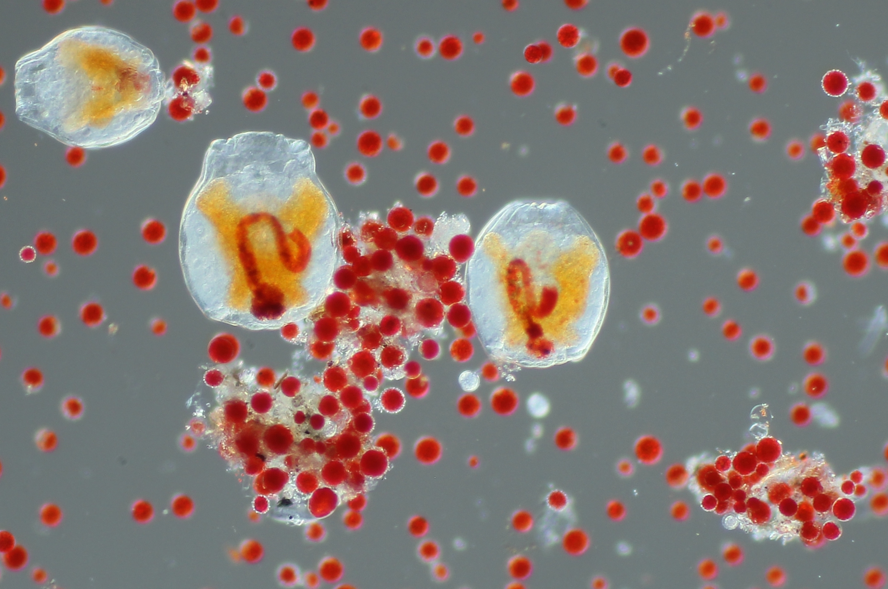

Microscopy
Long overdue microscopy photo dump
Here is a long overdue post containing some of my photomicrographs taken throughout the course of my PhD. Snow algae are gorgeous under the microscope, with a diversity of forms, colors, and species. Over the course of my research I spend hundreds of hours at the microscope, trying to glean insights into their life history and ecology. Please don’t hesitate to email me at casey_engstrom [at] sfu.ca if you would like to use some of these photos or have any questions. (You can see some of these images displayed in a gallery located inside of a glacier in Norway at klimapark )
 We know tardigrades are found widely in aquatic habitats but we didn’t know that they also eat snow algae! Tardigrades are actually a tiny multicellular animal, unlike the algae which are unicellular. Here is a tardigrade, caught “red-handed” after grazing on some red snow algae. The red pigment is astaxanthin, the same pigment found in salmon and shrimp. It seems as though the astaxanthin is present throughout the tardigrades body, including the head?!? The red cells are ~20 µm diameter.
We know tardigrades are found widely in aquatic habitats but we didn’t know that they also eat snow algae! Tardigrades are actually a tiny multicellular animal, unlike the algae which are unicellular. Here is a tardigrade, caught “red-handed” after grazing on some red snow algae. The red pigment is astaxanthin, the same pigment found in salmon and shrimp. It seems as though the astaxanthin is present throughout the tardigrades body, including the head?!? The red cells are ~20 µm diameter.
 Another critter that we found munching on snow algae are tardigrades, also known as “wheel animalcules”. These filter feeders madly twitch the hair-like cilia near their mouth to pump water through their digestive tract, here highlighted in red following the path of partially digested algae.
 I don’t want to let the animals steal the show, though. The algae themselves are beautiful. In some samples we was a kaleidoscope of forms and colors, representing different species and life stages. However, beware of look-alikes! Some species can look nearly identical. Conversely, the same species can look completely different, for example green or red, depending on the life stage. The spherical red guys are probably Sanguina nivaloides, which is widely found in red snow worldwide. However, the red cell in bottom right could be Rosetta sp., note the translucent sac enveloping the cell. The pill-shaped green-orange cells with little spikes are known as Chloromonas brevispina, but this “species” probably actually contains multiple species. Much of the transparent shapes are fungi. Some of the spherical red-green cells could be an earlier developmental stage of Sanguina nivaloides, but these could be confused with Chloromonas krienitzii which forms orange-green spherical cells with slightly thicker translucent outer cell walls. The large red cells are again ~20 µm diameter, so this image is zoomed in a bit compared to the two above.
I don’t want to let the animals steal the show, though. The algae themselves are beautiful. In some samples we was a kaleidoscope of forms and colors, representing different species and life stages. However, beware of look-alikes! Some species can look nearly identical. Conversely, the same species can look completely different, for example green or red, depending on the life stage. The spherical red guys are probably Sanguina nivaloides, which is widely found in red snow worldwide. However, the red cell in bottom right could be Rosetta sp., note the translucent sac enveloping the cell. The pill-shaped green-orange cells with little spikes are known as Chloromonas brevispina, but this “species” probably actually contains multiple species. Much of the transparent shapes are fungi. Some of the spherical red-green cells could be an earlier developmental stage of Sanguina nivaloides, but these could be confused with Chloromonas krienitzii which forms orange-green spherical cells with slightly thicker translucent outer cell walls. The large red cells are again ~20 µm diameter, so this image is zoomed in a bit compared to the two above.
 These splashy red and green cells are likely Chlainomonas, a genus which often covers the surface of snow overlying alpine lakes in spring. The green spiky guys are probably some kind of “Chloromonas brevispina". The red cell near the center of the image encased in a transparent shell with short protruding “turrets” is likely Rosetta castellata. The large, dark red cells could be Chlainomonas or Sanguina nivaloides, not sure. The smaller orange or red cells are probably Sanguina nivaloides.
These splashy red and green cells are likely Chlainomonas, a genus which often covers the surface of snow overlying alpine lakes in spring. The green spiky guys are probably some kind of “Chloromonas brevispina". The red cell near the center of the image encased in a transparent shell with short protruding “turrets” is likely Rosetta castellata. The large, dark red cells could be Chlainomonas or Sanguina nivaloides, not sure. The smaller orange or red cells are probably Sanguina nivaloides.
 I kept seeing these giant brown and green spheres with translucent outer shell. For quite a long time I thought they were maybe some developmental stage of snow algae, but now I am more inclined to think they are some species of micro-euk, perhaps with a symbiotic algae within that is giving it the green pigment. The orange cells are likely Chloromonas krienitzii.
I kept seeing these giant brown and green spheres with translucent outer shell. For quite a long time I thought they were maybe some developmental stage of snow algae, but now I am more inclined to think they are some species of micro-euk, perhaps with a symbiotic algae within that is giving it the green pigment. The orange cells are likely Chloromonas krienitzii.
 Hours fly by while exploring these blooms beneath the microscope. These are what we are proposing to name Rosetta castellata, a new genus within the Chloromonadinia phylogroup. Chloromonadinia includes Chlainomonas and Chloromonas; Rosetta would add a third genus to 7this group, and add to the list a third type of snow algae known to produce red pigment-filled cells along with Chlainomonas and Sanguina. Sanguina is most distantly related. We found Rosetta castellata mostly below treeline, whereas the closely related Rosetta floraniva was only on glaciers.
Hours fly by while exploring these blooms beneath the microscope. These are what we are proposing to name Rosetta castellata, a new genus within the Chloromonadinia phylogroup. Chloromonadinia includes Chlainomonas and Chloromonas; Rosetta would add a third genus to 7this group, and add to the list a third type of snow algae known to produce red pigment-filled cells along with Chlainomonas and Sanguina. Sanguina is most distantly related. We found Rosetta castellata mostly below treeline, whereas the closely related Rosetta floraniva was only on glaciers.
 Sanguina nivaloides, some Rosetta, and one big red Chlainomonas. The translucent three-armed cells are
Chionaster nivalis, a unique lineage of snow-adapted fungi. The green spots in the giant brown thick-walled guy could be symbiotic algae?
Sanguina nivaloides, some Rosetta, and one big red Chlainomonas. The translucent three-armed cells are
Chionaster nivalis, a unique lineage of snow-adapted fungi. The green spots in the giant brown thick-walled guy could be symbiotic algae?
 Hello again, its Sanguina nivaloides in varying stages of pigment accumulation (and a couple of oblong green spiky “Chloromonas nivalis"). This is what we mostly find in field samples, but in the lab they grow as
green biciliates. Likely, they start producing red pigment immediately to protect the photosynthetic apparatus from solar damage, hence we rarely see the green cells at the snow surface.
Hello again, its Sanguina nivaloides in varying stages of pigment accumulation (and a couple of oblong green spiky “Chloromonas nivalis"). This is what we mostly find in field samples, but in the lab they grow as
green biciliates. Likely, they start producing red pigment immediately to protect the photosynthetic apparatus from solar damage, hence we rarely see the green cells at the snow surface.
 Cool to see these cilia on Chlainomonas. There is a lot of interesting work to be done in this group deciphering species and life histories. The yellow elongated ones are probably some kind of “Chloromonas nivalis". The little spiky red spherical cells are probabaly some kind of Sanguina–we sequenced them and found they were distinct from Sanguina nivaloides; possibly a new species? No shortage of interesting questions for future studies.
Cool to see these cilia on Chlainomonas. There is a lot of interesting work to be done in this group deciphering species and life histories. The yellow elongated ones are probably some kind of “Chloromonas nivalis". The little spiky red spherical cells are probabaly some kind of Sanguina–we sequenced them and found they were distinct from Sanguina nivaloides; possibly a new species? No shortage of interesting questions for future studies.
I have heaps more microscopy images of snow algae, including SEM images which I will share at a future point. In the meantime, if you’ve made it this far you might be interested in reading some of my scientific papers. Don’t hesitate to reach out via email if you want to talk about snow algae, casey_engstrom [at] sfu.ca